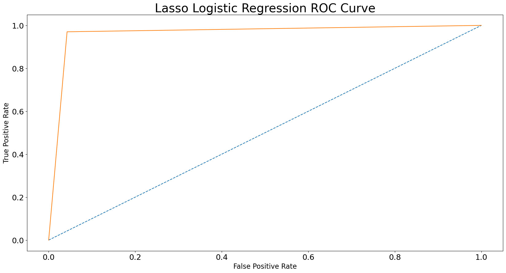
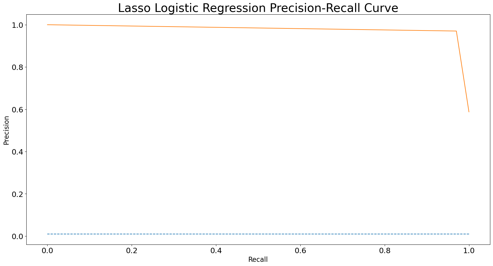

15.4. Implementation Part 2#
from IPython.core.interactiveshell import InteractiveShell
InteractiveShell.ast_node_interactivity = "all"
15.4.1. PCA#
import numpy as np
from scipy import signal
import matplotlib.pyplot as plt
%matplotlib inline
np.random.seed = 1
N = 1000
fs = 500
w = np.arange(1,N+1) * 2 * np.pi/fs
t = np.arange(1,N+1)/fs
x = 0.75 * np.sin(w*5)
y = signal.sawtooth(w*7, 0.5)
d1 = 0.5*y + 0.5*x + 0.1*np.random.rand(1,N)
d2 = 0.2*y + 0.75*x + 0.15*np.random.rand(1,N)
d3 = 0.7*y + 0.25*x + 0.1*np.random.rand(1,N)
d4 = -0.5*y + 0.4*x + 0.2*np.random.rand(1,N)
d5 = 0.6*np.random.rand(1,N)
d1 = d1 - d1.mean()
d2 = d2 - d2.mean()
d3 = d3 - d3.mean()
d4 = d4 - d4.mean()
d5 = d5 - d5.mean()
plt.plot(d1.transpose())
[<matplotlib.lines.Line2D at 0x126d7e2f0>]
plt.plot(t, x)
[<matplotlib.lines.Line2D at 0x126e839a0>]
plt.plot(t, y)
[<matplotlib.lines.Line2D at 0x126f404c0>]
import numpy as np
X = np.array([d1[0], d2[0], d3[0], d4[0], d5[0]])
X
array([[-0.46981586, -0.42866902, -0.39316807, ..., -0.47955451,
-0.45733098, -0.46029748],
[-0.21130351, -0.15158448, -0.04709991, ..., -0.27291877,
-0.28964757, -0.26884629],
[-0.69129107, -0.56005098, -0.53290787, ..., -0.63600718,
-0.68535411, -0.67558984],
[ 0.47960022, 0.41991172, 0.55485042, ..., 0.45033692,
0.5430905 , 0.47260413],
[ 0.2390762 , 0.01199429, -0.13708025, ..., 0.1239307 ,
0.16434706, -0.23894876]])
X.shape
(5, 1000)
U,S,V = np.linalg.svd(X)
S
array([20.92417653, 14.25151926, 5.48629509, 1.39918204, 0.97801929])
eigen = S**2
eigen
array([437.82116367, 203.10580127, 30.09943377, 1.95771037,
0.95652173])
eigen
array([437.82116367, 203.10580127, 30.09943377, 1.95771037,
0.95652173])
for i in range(5):
V[:,i] = V[:,i] * np.sqrt(eigen[i])
eigen = eigen/N
eigen = eigen/sum(eigen)
eigen
array([0.64964352, 0.30137046, 0.04466185, 0.00290487, 0.0014193 ])
15.4.1.1. Scree plot#
Gives the measure of the associated principal component’s importance with regards to how much of the total information it represents.
plt.plot(range(1,6), eigen)
[<matplotlib.lines.Line2D at 0x126fc8d60>]
plt.plot(V[:,0])
plt.show()
[<matplotlib.lines.Line2D at 0x126f61d80>]
plt.plot(V[:,1])
plt.show()
[<matplotlib.lines.Line2D at 0x126ed7ee0>]
plt.plot(V[:,2])
plt.show()
[<matplotlib.lines.Line2D at 0x12712a8f0>]
15.4.1.2. PCA on Iris Data#
import matplotlib.pyplot as plt
from mpl_toolkits.mplot3d import Axes3D
from sklearn import datasets
from sklearn.decomposition import PCA
# import some data to play with
iris = datasets.load_iris()
X = iris.data[:, :2] # we only take the first two features.
y = iris.target
x_min, x_max = X[:, 0].min() - .5, X[:, 0].max() + .5
y_min, y_max = X[:, 1].min() - .5, X[:, 1].max() + .5
plt.figure(2, figsize=(8, 6))
plt.clf()
# Plot the training points
plt.scatter(X[:, 0], X[:, 1], c=y, cmap=plt.cm.Set1,
edgecolor='k')
plt.xlabel('Sepal length')
plt.ylabel('Sepal width')
plt.xlim(x_min, x_max)
plt.ylim(y_min, y_max)
plt.xticks(())
plt.yticks(())
# To getter a better understanding of interaction of the dimensions
# plot the first three PCA dimensions
fig = plt.figure(1, figsize=(8, 6))
ax = Axes3D(fig, elev=-150, azim=110)
X_reduced = PCA(n_components=3).fit_transform(iris.data)
ax.scatter(X_reduced[:, 0], X_reduced[:, 1], X_reduced[:, 2], c=y,
cmap=plt.cm.Set1, edgecolor='k', s=40)
ax.set_title("First three PCA directions")
ax.set_xlabel("1st eigenvector")
ax.w_xaxis.set_ticklabels([])
ax.set_ylabel("2nd eigenvector")
ax.w_yaxis.set_ticklabels([])
ax.set_zlabel("3rd eigenvector")
ax.w_zaxis.set_ticklabels([])
plt.show()
<Figure size 800x600 with 0 Axes>
<matplotlib.collections.PathCollection at 0x130ae9720>
Text(0.5, 0, 'Sepal length')
Text(0, 0.5, 'Sepal width')
(3.8, 8.4)
(1.5, 4.9)
([], [])
([], [])
<mpl_toolkits.mplot3d.art3d.Path3DCollection at 0x130b2ff10>
Text(0.5, 0.92, 'First three PCA directions')
Text(0.5, 0, '1st eigenvector')
/var/folders/3m/snssywpx56b_nwy1f1jy103h0000gn/T/ipykernel_34335/1367415577.py:37: MatplotlibDeprecationWarning: The w_xaxis attribute was deprecated in Matplotlib 3.1 and will be removed in 3.8. Use xaxis instead.
ax.w_xaxis.set_ticklabels([])
[Text(-4.0, 0, ''),
Text(-3.0, 0, ''),
Text(-2.0, 0, ''),
Text(-1.0, 0, ''),
Text(0.0, 0, ''),
Text(1.0, 0, ''),
Text(2.0, 0, ''),
Text(3.0, 0, ''),
Text(4.0, 0, ''),
Text(5.0, 0, '')]
Text(0.5, 0.5, '2nd eigenvector')
/var/folders/3m/snssywpx56b_nwy1f1jy103h0000gn/T/ipykernel_34335/1367415577.py:39: MatplotlibDeprecationWarning: The w_yaxis attribute was deprecated in Matplotlib 3.1 and will be removed in 3.8. Use yaxis instead.
ax.w_yaxis.set_ticklabels([])
[Text(-1.5, 0, ''),
Text(-1.0, 0, ''),
Text(-0.5, 0, ''),
Text(0.0, 0, ''),
Text(0.5, 0, ''),
Text(1.0, 0, ''),
Text(1.5, 0, ''),
Text(2.0, 0, '')]
Text(0.5, 0, '3rd eigenvector')
/var/folders/3m/snssywpx56b_nwy1f1jy103h0000gn/T/ipykernel_34335/1367415577.py:41: MatplotlibDeprecationWarning: The w_zaxis attribute was deprecated in Matplotlib 3.1 and will be removed in 3.8. Use zaxis instead.
ax.w_zaxis.set_ticklabels([])
[Text(-0.8, 0, ''),
Text(-0.6000000000000001, 0, ''),
Text(-0.4, 0, ''),
Text(-0.19999999999999996, 0, ''),
Text(0.0, 0, ''),
Text(0.19999999999999996, 0, ''),
Text(0.40000000000000013, 0, ''),
Text(0.6000000000000001, 0, ''),
Text(0.8, 0, ''),
Text(1.0, 0, '')]
<Figure size 800x600 with 0 Axes>
iris = datasets.load_iris()
X = iris.data[:50,:]
X2 = X +0.05*np.random.rand(50,4)
X_combined = np.zeros((50,8))
X_combined[:,0:4] = X
X_combined[:,4:] = X2
X_combined
array([[5.1 , 3.5 , 1.4 , 0.2 , 5.13592176,
3.51853074, 1.42930419, 0.24008616],
[4.9 , 3. , 1.4 , 0.2 , 4.93415502,
3.02518598, 1.42234295, 0.23847863],
[4.7 , 3.2 , 1.3 , 0.2 , 4.74968434,
3.22831364, 1.30444656, 0.23879705],
[4.6 , 3.1 , 1.5 , 0.2 , 4.63251141,
3.13849415, 1.50919598, 0.23228585],
[5. , 3.6 , 1.4 , 0.2 , 5.03706755,
3.61807216, 1.41810947, 0.24709545],
[5.4 , 3.9 , 1.7 , 0.4 , 5.43761989,
3.90468478, 1.70377529, 0.41586866],
[4.6 , 3.4 , 1.4 , 0.3 , 4.62871275,
3.43862391, 1.41228545, 0.3265377 ],
[5. , 3.4 , 1.5 , 0.2 , 5.03711651,
3.44757492, 1.54489522, 0.20243869],
[4.4 , 2.9 , 1.4 , 0.2 , 4.41200864,
2.91793156, 1.41781809, 0.20915452],
[4.9 , 3.1 , 1.5 , 0.1 , 4.91918337,
3.13644739, 1.53605213, 0.11176776],
[5.4 , 3.7 , 1.5 , 0.2 , 5.42898705,
3.73559627, 1.51786394, 0.20854399],
[4.8 , 3.4 , 1.6 , 0.2 , 4.8310862 ,
3.40371663, 1.62864433, 0.24401907],
[4.8 , 3. , 1.4 , 0.1 , 4.84614707,
3.02661372, 1.44131493, 0.14214454],
[4.3 , 3. , 1.1 , 0.1 , 4.31841822,
3.0447497 , 1.13116348, 0.11978722],
[5.8 , 4. , 1.2 , 0.2 , 5.80684941,
4.02617178, 1.24221089, 0.21855078],
[5.7 , 4.4 , 1.5 , 0.4 , 5.73842236,
4.41634497, 1.51367883, 0.43814492],
[5.4 , 3.9 , 1.3 , 0.4 , 5.44397102,
3.94420189, 1.31976743, 0.42525688],
[5.1 , 3.5 , 1.4 , 0.3 , 5.14073741,
3.53353165, 1.41772782, 0.31329201],
[5.7 , 3.8 , 1.7 , 0.3 , 5.71398798,
3.84397437, 1.7432824 , 0.31881303],
[5.1 , 3.8 , 1.5 , 0.3 , 5.13181979,
3.84185015, 1.52657733, 0.31032925],
[5.4 , 3.4 , 1.7 , 0.2 , 5.44842285,
3.43719253, 1.73398384, 0.20472677],
[5.1 , 3.7 , 1.5 , 0.4 , 5.10495164,
3.7282955 , 1.50875503, 0.41662007],
[4.6 , 3.6 , 1. , 0.2 , 4.63352918,
3.61917757, 1.00665328, 0.23011465],
[5.1 , 3.3 , 1.7 , 0.5 , 5.14416539,
3.33144498, 1.71767928, 0.53583307],
[4.8 , 3.4 , 1.9 , 0.2 , 4.80147491,
3.42728786, 1.92211436, 0.20291637],
[5. , 3. , 1.6 , 0.2 , 5.04334464,
3.03356126, 1.61279758, 0.23486567],
[5. , 3.4 , 1.6 , 0.4 , 5.01879251,
3.40287498, 1.63693655, 0.44896307],
[5.2 , 3.5 , 1.5 , 0.2 , 5.24103263,
3.54610486, 1.52529802, 0.21966886],
[5.2 , 3.4 , 1.4 , 0.2 , 5.23663227,
3.44051569, 1.43778432, 0.2049364 ],
[4.7 , 3.2 , 1.6 , 0.2 , 4.71045429,
3.20999808, 1.62083072, 0.20128607],
[4.8 , 3.1 , 1.6 , 0.2 , 4.80104752,
3.12977768, 1.64911498, 0.2201345 ],
[5.4 , 3.4 , 1.5 , 0.4 , 5.42086531,
3.40505934, 1.52011131, 0.42068555],
[5.2 , 4.1 , 1.5 , 0.1 , 5.23855128,
4.11507568, 1.50398091, 0.10172298],
[5.5 , 4.2 , 1.4 , 0.2 , 5.54959573,
4.22373983, 1.41294756, 0.24701937],
[4.9 , 3.1 , 1.5 , 0.2 , 4.90402214,
3.12448243, 1.53166378, 0.21800077],
[5. , 3.2 , 1.2 , 0.2 , 5.0429515 ,
3.23445537, 1.22266075, 0.22995649],
[5.5 , 3.5 , 1.3 , 0.2 , 5.50123556,
3.53770927, 1.31556218, 0.20561194],
[4.9 , 3.6 , 1.4 , 0.1 , 4.94157743,
3.64425568, 1.43011297, 0.11683085],
[4.4 , 3. , 1.3 , 0.2 , 4.41488114,
3.03824213, 1.31972387, 0.23170146],
[5.1 , 3.4 , 1.5 , 0.2 , 5.10580055,
3.44883636, 1.52838614, 0.20758764],
[5. , 3.5 , 1.3 , 0.3 , 5.04869398,
3.50691137, 1.31461621, 0.327241 ],
[4.5 , 2.3 , 1.3 , 0.3 , 4.50643166,
2.30518799, 1.34684558, 0.3415288 ],
[4.4 , 3.2 , 1.3 , 0.2 , 4.4266805 ,
3.20650238, 1.32199971, 0.2196665 ],
[5. , 3.5 , 1.6 , 0.6 , 5.0172863 ,
3.53767379, 1.61119733, 0.61853224],
[5.1 , 3.8 , 1.9 , 0.4 , 5.12849353,
3.80786093, 1.93011929, 0.43566059],
[4.8 , 3. , 1.4 , 0.3 , 4.82651704,
3.03675056, 1.43549078, 0.31714484],
[5.1 , 3.8 , 1.6 , 0.2 , 5.13328375,
3.84545583, 1.63005442, 0.23734436],
[4.6 , 3.2 , 1.4 , 0.2 , 4.62307572,
3.22271622, 1.44826677, 0.24678941],
[5.3 , 3.7 , 1.5 , 0.2 , 5.315802 ,
3.73899608, 1.50066194, 0.24519685],
[5. , 3.3 , 1.4 , 0.2 , 5.015584 ,
3.32848672, 1.44379691, 0.24955435]])
X_combined.mean(axis=0)
array([5.006 , 3.428 , 1.462 , 0.246 , 5.03339169,
3.45610479, 1.48641206, 0.27078467])
from sklearn import preprocessing
X_scaled = preprocessing.scale(X_combined)
X_scaled
array([[ 0.26938189, 0.19186974, -0.36063582, -0.44092382, 0.29179329,
0.16611478, -0.3300681 , -0.28748938],
[-0.30377107, -1.14055903, -0.36063582, -0.44092382, -0.28242054,
-1.14667028, -0.37030217, -0.30254372],
[-0.87692403, -0.60758752, -0.9423065 , -0.44092382, -0.807411 ,
-0.60614978, -1.05171154, -0.29956173],
[-1.16350052, -0.87407328, 0.22103486, -0.44092382, -1.14087684,
-0.84515848, 0.13168492, -0.36053868],
[-0.01719459, 0.4583555 , -0.36063582, -0.44092382, 0.01046123,
0.43099342, -0.39477056, -0.22184783],
[ 1.12911134, 1.25781276, 1.38437621, 1.47613628, 1.15040476,
1.19366651, 1.25630084, 1.35870102],
[-1.16350052, -0.07461601, -0.36063582, 0.51760623, -1.15168756,
-0.04651641, -0.4284318 , 0.52212301],
[-0.01719459, -0.07461601, 0.22103486, -0.44092382, 0.01060055,
-0.02269789, 0.33801686, -0.64005518],
[-1.73665348, -1.40704478, -0.36063582, -0.44092382, -1.76841209,
-1.43207314, -0.39645464, -0.57716196],
[-0.30377107, -0.87407328, 0.22103486, -1.39945388, -0.32502878,
-0.85060487, 0.28690622, -1.48918183],
[ 1.12911134, 0.72484125, 0.22103486, -0.44092382, 1.12583631,
0.74372381, 0.18178336, -0.58287952],
[-0.59034755, -0.07461601, 0.80270553, -0.44092382, -0.57574707,
-0.13940433, 0.82206412, -0.25065791],
[-0.59034755, -1.14055903, -0.36063582, -1.39945388, -0.5328849 ,
-1.14287108, -0.26064925, -1.20470554],
[-2.02322996, -1.14055903, -2.10564785, -1.39945388, -2.03476376,
-1.09461145, -2.05324095, -1.41408024],
[ 2.27541727, 1.52429852, -1.52397717, -0.44092382, 2.20120578,
1.5169421 , -1.41141689, -0.48916664],
[ 1.98884078, 2.59024154, 0.22103486, 1.47613628, 2.00646725,
2.55518876, 0.15759457, 1.5673166 ],
[ 1.12911134, 1.25781276, -0.9423065 , 1.47613628, 1.16847961,
1.29882112, -0.96316102, 1.446621 ],
[ 0.26938189, 0.19186974, -0.36063582, 0.51760623, 0.30549828,
0.20603204, -0.3969764 , 0.3980781 ],
[ 1.98884078, 0.99132701, 1.38437621, 0.51760623, 1.93692873,
1.03211678, 1.48464127, 0.44978205],
[ 0.26938189, 0.99132701, 0.22103486, 0.51760623, 0.28011937,
1.02646425, 0.23214442, 0.37033206],
[ 1.12911134, -0.07461601, 1.38437621, -0.44092382, 1.18114922,
-0.05032531, 1.43089812, -0.61862747],
[ 0.26938189, 0.72484125, 0.22103486, 1.47613628, 0.20365454,
0.72429655, 0.1291363 , 1.36573795],
[-1.16350052, 0.4583555 , -2.68731853, -0.44092382, -1.13798034,
0.43393491, -2.77287634, -0.38087186],
[ 0.26938189, -0.34110177, 1.38437621, 2.43466633, 0.31525407,
-0.3317184 , 1.33666213, 2.48215902],
[-0.59034755, -0.07461601, 2.54771757, -0.44092382, -0.66001872,
-0.07668154, 2.51824175, -0.63558177],
[-0.01719459, -1.14055903, 0.80270553, -0.44092382, 0.02832538,
-1.12438376, 0.7304742 , -0.33637886],
[-0.01719459, -0.07461601, 0.80270553, 1.47613628, -0.04154824,
-0.14164394, 0.86999096, 1.66862774],
[ 0.55595837, 0.19186974, 0.22103486, -0.44092382, 0.59093137,
0.23948923, 0.22475037, -0.4786959 ],
[ 0.55595837, -0.07461601, -0.36063582, -0.44092382, 0.57840826,
-0.04148241, -0.28105525, -0.61666428],
[-0.87692403, -0.60758752, 0.80270553, -0.44092382, -0.91905695,
-0.65488729, 0.77690359, -0.65084935],
[-0.59034755, -0.87407328, 0.80270553, -0.44092382, -0.66123503,
-0.86835289, 0.94037896, -0.47433522],
[ 1.12911134, -0.07461601, 0.22103486, 1.47613628, 1.10272242,
-0.13583139, 0.19477257, 1.40381087],
[ 0.55595837, 1.79078427, 0.22103486, -1.39945388, 0.58386964,
1.75351443, 0.10154318, -1.58325046],
[ 1.41568782, 2.05727003, -0.36063582, -0.44092382, 1.46908005,
2.04266855, -0.42460499, -0.22256034],
[-0.30377107, -0.87407328, 0.22103486, -0.44092382, -0.36817656,
-0.8824435 , 0.26154273, -0.49431744],
[-0.01719459, -0.60758752, -1.52397717, -0.44092382, 0.02720654,
-0.58980671, -1.52441145, -0.38235296],
[ 1.41568782, 0.19186974, -0.9423065 , -0.44092382, 1.33145044,
0.21714864, -0.98746625, -0.61033794],
[-0.30377107, 0.4583555 , -0.36063582, -1.39945388, -0.26129687,
0.5006675 , -0.32539354, -1.44176639],
[-1.73665348, -1.14055903, -0.9423065 , -0.44092382, -1.76023714,
-1.111928 , -0.9634128 , -0.36601144],
[ 0.26938189, -0.07461601, 0.22103486, -0.44092382, 0.20607046,
-0.01934122, 0.24259888, -0.59183561],
[-0.01719459, 0.19186974, -0.9423065 , 0.51760623, 0.04354922,
0.13519577, -0.99293369, 0.52870946],
[-1.450077 , -3.00595931, -0.9423065 , 0.51760623, -1.49969085,
-3.06257716, -0.8066566 , 0.66251363],
[-1.73665348, -0.60758752, -0.9423065 , -0.44092382, -1.72665701,
-0.6641893 , -0.95025902, -0.47871795],
[-0.01719459, 0.19186974, 0.80270553, 3.39319638, -0.04583479,
0.21705423, 0.72122518, 3.25663081],
[ 0.26938189, 0.99132701, 2.54771757, 1.47613628, 0.27065307,
0.93601929, 2.56450808, 1.54405102],
[-0.59034755, -1.14055903, -0.36063582, 0.51760623, -0.58875059,
-1.11589706, -0.29431126, 0.4341596 ],
[ 0.26938189, 0.99132701, 0.80270553, -0.44092382, 0.28428572,
1.03605893, 0.83021406, -0.31316608],
[-1.16350052, -0.60758752, -0.36063582, -0.44092382, -1.16773016,
-0.62104444, -0.22046952, -0.2247139 ],
[ 0.84253486, 0.72484125, 0.22103486, -0.44092382, 0.80371968,
0.75277067, 0.08236046, -0.23962812],
[-0.01719459, -0.34110177, -0.36063582, -0.44092382, -0.05067943,
-0.33959029, -0.24630407, -0.19882045]])
X_scaled.mean(axis=0)
array([ 1.87003191e-15, -2.20823360e-15, -1.17128529e-15, 9.17044218e-16,
-2.32286412e-15, 3.53050922e-16, 9.49240686e-16, 3.66373598e-16])
U,S,V = np.linalg.svd(X_scaled)
S
array([14.26239512, 10.13038742, 8.29072429, 4.96121697, 0.66485353,
0.32639457, 0.18803407, 0.16010236])
eigen = S**2
eigen
array([2.03415914e+02, 1.02624749e+02, 6.87361092e+01, 2.46136738e+01,
4.42030219e-01, 1.06533415e-01, 3.53568121e-02, 2.56327643e-02])
eigen = eigen/50
eigen = eigen/sum(eigen)
eigen = np.round(eigen*100)/100
print(eigen)
[0.51 0.26 0.17 0.06 0. 0. 0. 0. ]
sum([0.51, 0.26, 0.17, 0.06])
1.0
plt.plot(range(1, 9), eigen)
[<matplotlib.lines.Line2D at 0x130f17880>]
X_reduced = PCA(n_components=3).fit_transform(X_scaled)
# https://towardsdatascience.com/machine-learning-algorithms-part-9-k-means-example-in-python-f2ad05ed5203
# https://blog.floydhub.com/introduction-to-k-means-clustering-in-python-with-scikit-learn/
from sklearn.datasets import make_blobs
plt.title("Three blobs", fontsize='small')
X1, Y1 = make_blobs(n_features=2, centers=3, random_state=10)
plt.scatter(X1[:, 0], X1[:, 1], marker='o', c=Y1,
s=25, edgecolor='k')
Text(0.5, 1.0, 'Three blobs')
<matplotlib.collections.PathCollection at 0x127073940>
# Using scikit-learn to perform K-Means clustering
from sklearn.cluster import KMeans
# Specify the number of clusters (3) and fit the data X
kmeans = KMeans(n_clusters=3, random_state=0).fit(X1)
# Get the cluster centroids
# Plotting the cluster centers and the data points on a 2D plane
plt.scatter(X1[:, 0], X1[:, 1], marker='o', c=Y1,
s=25, edgecolor='k')
plt.scatter(kmeans.cluster_centers_[:, 0], kmeans.cluster_centers_[:, 1], c='red', marker='x')
plt.title('Data points and cluster centroids')
plt.show()
<matplotlib.collections.PathCollection at 0x1314abb20>
<matplotlib.collections.PathCollection at 0x130ff79d0>
Text(0.5, 1.0, 'Data points and cluster centroids')
# https://jakevdp.github.io/PythonDataScienceHandbook/05.07-support-vector-machines.html
# https://scikit-learn.org/stable/auto_examples/linear_model/plot_ransac.html
# http://www.cse.psu.edu/~rtc12/CSE486/lecture15.pdf
# https://towardsdatascience.com/accuracy-precision-recall-or-f1-331fb37c5cb9
15.4.2. Evaluating Algorithms#
from sklearn.datasets import load_breast_cancer
data = load_breast_cancer()
X = data.data
Y = data.target
from sklearn.metrics import accuracy_score
from sklearn.metrics import confusion_matrix
from sklearn.metrics import classification_report
print(data.DESCR)
data.target_names
.. _breast_cancer_dataset:
Breast cancer wisconsin (diagnostic) dataset
--------------------------------------------
**Data Set Characteristics:**
:Number of Instances: 569
:Number of Attributes: 30 numeric, predictive attributes and the class
:Attribute Information:
- radius (mean of distances from center to points on the perimeter)
- texture (standard deviation of gray-scale values)
- perimeter
- area
- smoothness (local variation in radius lengths)
- compactness (perimeter^2 / area - 1.0)
- concavity (severity of concave portions of the contour)
- concave points (number of concave portions of the contour)
- symmetry
- fractal dimension ("coastline approximation" - 1)
The mean, standard error, and "worst" or largest (mean of the three
worst/largest values) of these features were computed for each image,
resulting in 30 features. For instance, field 0 is Mean Radius, field
10 is Radius SE, field 20 is Worst Radius.
- class:
- WDBC-Malignant
- WDBC-Benign
:Summary Statistics:
===================================== ====== ======
Min Max
===================================== ====== ======
radius (mean): 6.981 28.11
texture (mean): 9.71 39.28
perimeter (mean): 43.79 188.5
area (mean): 143.5 2501.0
smoothness (mean): 0.053 0.163
compactness (mean): 0.019 0.345
concavity (mean): 0.0 0.427
concave points (mean): 0.0 0.201
symmetry (mean): 0.106 0.304
fractal dimension (mean): 0.05 0.097
radius (standard error): 0.112 2.873
texture (standard error): 0.36 4.885
perimeter (standard error): 0.757 21.98
area (standard error): 6.802 542.2
smoothness (standard error): 0.002 0.031
compactness (standard error): 0.002 0.135
concavity (standard error): 0.0 0.396
concave points (standard error): 0.0 0.053
symmetry (standard error): 0.008 0.079
fractal dimension (standard error): 0.001 0.03
radius (worst): 7.93 36.04
texture (worst): 12.02 49.54
perimeter (worst): 50.41 251.2
area (worst): 185.2 4254.0
smoothness (worst): 0.071 0.223
compactness (worst): 0.027 1.058
concavity (worst): 0.0 1.252
concave points (worst): 0.0 0.291
symmetry (worst): 0.156 0.664
fractal dimension (worst): 0.055 0.208
===================================== ====== ======
:Missing Attribute Values: None
:Class Distribution: 212 - Malignant, 357 - Benign
:Creator: Dr. William H. Wolberg, W. Nick Street, Olvi L. Mangasarian
:Donor: Nick Street
:Date: November, 1995
This is a copy of UCI ML Breast Cancer Wisconsin (Diagnostic) datasets.
https://goo.gl/U2Uwz2
Features are computed from a digitized image of a fine needle
aspirate (FNA) of a breast mass. They describe
characteristics of the cell nuclei present in the image.
Separating plane described above was obtained using
Multisurface Method-Tree (MSM-T) [K. P. Bennett, "Decision Tree
Construction Via Linear Programming." Proceedings of the 4th
Midwest Artificial Intelligence and Cognitive Science Society,
pp. 97-101, 1992], a classification method which uses linear
programming to construct a decision tree. Relevant features
were selected using an exhaustive search in the space of 1-4
features and 1-3 separating planes.
The actual linear program used to obtain the separating plane
in the 3-dimensional space is that described in:
[K. P. Bennett and O. L. Mangasarian: "Robust Linear
Programming Discrimination of Two Linearly Inseparable Sets",
Optimization Methods and Software 1, 1992, 23-34].
This database is also available through the UW CS ftp server:
ftp ftp.cs.wisc.edu
cd math-prog/cpo-dataset/machine-learn/WDBC/
.. topic:: References
- W.N. Street, W.H. Wolberg and O.L. Mangasarian. Nuclear feature extraction
for breast tumor diagnosis. IS&T/SPIE 1993 International Symposium on
Electronic Imaging: Science and Technology, volume 1905, pages 861-870,
San Jose, CA, 1993.
- O.L. Mangasarian, W.N. Street and W.H. Wolberg. Breast cancer diagnosis and
prognosis via linear programming. Operations Research, 43(4), pages 570-577,
July-August 1995.
- W.H. Wolberg, W.N. Street, and O.L. Mangasarian. Machine learning techniques
to diagnose breast cancer from fine-needle aspirates. Cancer Letters 77 (1994)
163-171.
array(['malignant', 'benign'], dtype='<U9')
data.target
array([0, 0, 0, 0, 0, 0, 0, 0, 0, 0, 0, 0, 0, 0, 0, 0, 0, 0, 0, 1, 1, 1,
0, 0, 0, 0, 0, 0, 0, 0, 0, 0, 0, 0, 0, 0, 0, 1, 0, 0, 0, 0, 0, 0,
0, 0, 1, 0, 1, 1, 1, 1, 1, 0, 0, 1, 0, 0, 1, 1, 1, 1, 0, 1, 0, 0,
1, 1, 1, 1, 0, 1, 0, 0, 1, 0, 1, 0, 0, 1, 1, 1, 0, 0, 1, 0, 0, 0,
1, 1, 1, 0, 1, 1, 0, 0, 1, 1, 1, 0, 0, 1, 1, 1, 1, 0, 1, 1, 0, 1,
1, 1, 1, 1, 1, 1, 1, 0, 0, 0, 1, 0, 0, 1, 1, 1, 0, 0, 1, 0, 1, 0,
0, 1, 0, 0, 1, 1, 0, 1, 1, 0, 1, 1, 1, 1, 0, 1, 1, 1, 1, 1, 1, 1,
1, 1, 0, 1, 1, 1, 1, 0, 0, 1, 0, 1, 1, 0, 0, 1, 1, 0, 0, 1, 1, 1,
1, 0, 1, 1, 0, 0, 0, 1, 0, 1, 0, 1, 1, 1, 0, 1, 1, 0, 0, 1, 0, 0,
0, 0, 1, 0, 0, 0, 1, 0, 1, 0, 1, 1, 0, 1, 0, 0, 0, 0, 1, 1, 0, 0,
1, 1, 1, 0, 1, 1, 1, 1, 1, 0, 0, 1, 1, 0, 1, 1, 0, 0, 1, 0, 1, 1,
1, 1, 0, 1, 1, 1, 1, 1, 0, 1, 0, 0, 0, 0, 0, 0, 0, 0, 0, 0, 0, 0,
0, 0, 1, 1, 1, 1, 1, 1, 0, 1, 0, 1, 1, 0, 1, 1, 0, 1, 0, 0, 1, 1,
1, 1, 1, 1, 1, 1, 1, 1, 1, 1, 1, 0, 1, 1, 0, 1, 0, 1, 1, 1, 1, 1,
1, 1, 1, 1, 1, 1, 1, 1, 1, 0, 1, 1, 1, 0, 1, 0, 1, 1, 1, 1, 0, 0,
0, 1, 1, 1, 1, 0, 1, 0, 1, 0, 1, 1, 1, 0, 1, 1, 1, 1, 1, 1, 1, 0,
0, 0, 1, 1, 1, 1, 1, 1, 1, 1, 1, 1, 1, 0, 0, 1, 0, 0, 0, 1, 0, 0,
1, 1, 1, 1, 1, 0, 1, 1, 1, 1, 1, 0, 1, 1, 1, 0, 1, 1, 0, 0, 1, 1,
1, 1, 1, 1, 0, 1, 1, 1, 1, 1, 1, 1, 0, 1, 1, 1, 1, 1, 0, 1, 1, 0,
1, 1, 1, 1, 1, 1, 1, 1, 1, 1, 1, 1, 0, 1, 0, 0, 1, 0, 1, 1, 1, 1,
1, 0, 1, 1, 0, 1, 0, 1, 1, 0, 1, 0, 1, 1, 1, 1, 1, 1, 1, 1, 0, 0,
1, 1, 1, 1, 1, 1, 0, 1, 1, 1, 1, 1, 1, 1, 1, 1, 1, 0, 1, 1, 1, 1,
1, 1, 1, 0, 1, 0, 1, 1, 0, 1, 1, 1, 1, 1, 0, 0, 1, 0, 1, 0, 1, 1,
1, 1, 1, 0, 1, 1, 0, 1, 0, 1, 0, 0, 1, 1, 1, 0, 1, 1, 1, 1, 1, 1,
1, 1, 1, 1, 1, 0, 1, 0, 0, 1, 1, 1, 1, 1, 1, 1, 1, 1, 1, 1, 1, 1,
1, 1, 1, 1, 1, 1, 1, 1, 1, 1, 1, 1, 0, 0, 0, 0, 0, 0, 1])
from sklearn.model_selection import train_test_split
X_train, X_test, Y_train, Y_test = train_test_split(X, Y, test_size = 0.25, random_state = 0)
from sklearn.preprocessing import StandardScaler
sc = StandardScaler()
X_train = sc.fit_transform(X_train)
X_test = sc.transform(X_test)
from sklearn.linear_model import LogisticRegression
classifier = LogisticRegression(random_state = 0)
classifier.fit(X_train, Y_train)
Y_pred = classifier.predict(X_test)
accuracy = accuracy_score(Y_test, Y_pred)
accuracy
LogisticRegression(random_state=0)In a Jupyter environment, please rerun this cell to show the HTML representation or trust the notebook.
On GitHub, the HTML representation is unable to render, please try loading this page with nbviewer.org.
LogisticRegression(random_state=0)
0.958041958041958
cm = confusion_matrix(Y_test, Y_pred)
cm
# tn, fp, fn, tp = confusion_matrix(Y_test, Y_pred).ravel()
#TN, FP, FN, TP
#
array([[50, 3],
[ 3, 87]])
tn, fp, fn, tp = confusion_matrix(Y_test, Y_pred).ravel()
tn
fp
fn
tp
50
3
3
87
# 380 b
# 20 m
TN = 380
TP = 0
TN, FP, FN, TP
https://stackoverflow.com/questions/56078203/why-scikit-learn-confusion-matrix-is-reversed
[[True Negative, False Positive] [False Negative, True Positive]]
Y_pred
Y_test
array([0, 1, 1, 1, 1, 1, 1, 1, 1, 1, 1, 1, 1, 0, 1, 0, 1, 0, 0, 0, 0, 0,
1, 1, 0, 1, 1, 0, 1, 0, 1, 0, 1, 0, 1, 0, 1, 0, 1, 0, 0, 1, 0, 1,
1, 0, 1, 1, 1, 0, 0, 0, 0, 1, 1, 1, 1, 1, 1, 0, 0, 0, 1, 1, 0, 1,
0, 0, 0, 1, 1, 0, 1, 0, 0, 1, 1, 1, 1, 1, 0, 0, 0, 1, 0, 1, 1, 1,
0, 0, 1, 0, 0, 0, 1, 1, 0, 1, 1, 1, 1, 1, 1, 1, 0, 1, 0, 1, 1, 1,
1, 0, 0, 1, 1, 1, 1, 1, 1, 1, 1, 1, 1, 1, 0, 1, 1, 1, 1, 1, 0, 1,
1, 1, 1, 1, 0, 0, 0, 1, 1, 1, 0])
array([0, 1, 1, 1, 1, 1, 1, 1, 1, 1, 1, 1, 1, 1, 1, 0, 1, 0, 0, 0, 0, 0,
1, 1, 0, 1, 1, 0, 1, 0, 1, 0, 1, 0, 1, 0, 1, 0, 1, 0, 0, 1, 0, 1,
1, 0, 1, 1, 1, 0, 0, 0, 0, 1, 1, 1, 1, 1, 1, 0, 0, 0, 1, 1, 0, 1,
0, 0, 0, 1, 1, 0, 1, 0, 0, 1, 1, 1, 1, 1, 0, 0, 0, 1, 0, 1, 1, 1,
0, 0, 1, 0, 1, 0, 1, 1, 0, 1, 1, 1, 1, 1, 1, 1, 0, 1, 0, 1, 0, 0,
1, 0, 0, 1, 1, 1, 1, 1, 1, 1, 1, 1, 0, 1, 0, 1, 1, 1, 1, 1, 0, 1,
1, 1, 1, 1, 1, 0, 0, 1, 1, 1, 0])
results = classification_report(Y_test, Y_pred)
print(results)
precision recall f1-score support
0 0.94 0.94 0.94 53
1 0.97 0.97 0.97 90
accuracy 0.96 143
macro avg 0.96 0.96 0.96 143
weighted avg 0.96 0.96 0.96 143
# precision measures how accurate our positive predictions were
# precision = tp / (tp+fp)
# recall measures what fraction of the positives our model identfied
# recall = tp / (tp+fn)
from sklearn.neighbors import KNeighborsClassifier
classifier = KNeighborsClassifier(n_neighbors = 5, metric = 'minkowski', p = 2)
classifier.fit(X_train, Y_train)
Y_pred = classifier.predict(X_test)
accuracy = accuracy_score(Y_test, Y_pred)
accuracy
cm = confusion_matrix(Y_test, Y_pred)
cm
KNeighborsClassifier()In a Jupyter environment, please rerun this cell to show the HTML representation or trust the notebook.
On GitHub, the HTML representation is unable to render, please try loading this page with nbviewer.org.
KNeighborsClassifier()
/Users/hemanththaluru/miniconda3/lib/python3.10/site-packages/sklearn/neighbors/_classification.py:237: FutureWarning: Unlike other reduction functions (e.g. `skew`, `kurtosis`), the default behavior of `mode` typically preserves the axis it acts along. In SciPy 1.11.0, this behavior will change: the default value of `keepdims` will become False, the `axis` over which the statistic is taken will be eliminated, and the value None will no longer be accepted. Set `keepdims` to True or False to avoid this warning.
mode, _ = stats.mode(_y[neigh_ind, k], axis=1)
0.951048951048951
array([[47, 6],
[ 1, 89]])
print(accuracy)
0.951048951048951
results = classification_report(Y_test, Y_pred)
print(results)
precision recall f1-score support
0 0.98 0.89 0.93 53
1 0.94 0.99 0.96 90
accuracy 0.95 143
macro avg 0.96 0.94 0.95 143
weighted avg 0.95 0.95 0.95 143
from sklearn.svm import SVC
classifier = SVC(kernel = 'linear', random_state = 0)
classifier.fit(X_train, Y_train)
Y_pred = classifier.predict(X_test)
accuracy = accuracy_score(Y_test, Y_pred)
accuracy
cm = confusion_matrix(Y_test, Y_pred)
cm
SVC(kernel='linear', random_state=0)In a Jupyter environment, please rerun this cell to show the HTML representation or trust the notebook.
On GitHub, the HTML representation is unable to render, please try loading this page with nbviewer.org.
SVC(kernel='linear', random_state=0)
0.972027972027972
array([[51, 2],
[ 2, 88]])
results = classification_report(Y_test, Y_pred)
print(results)
precision recall f1-score support
0 0.96 0.96 0.96 53
1 0.98 0.98 0.98 90
accuracy 0.97 143
macro avg 0.97 0.97 0.97 143
weighted avg 0.97 0.97 0.97 143
from sklearn.svm import SVC
classifier = SVC(kernel = 'rbf', random_state = 0)
classifier.fit(X_train, Y_train)
Y_pred = classifier.predict(X_test)
accuracy = accuracy_score(Y_test, Y_pred)
accuracy
cm = confusion_matrix(Y_test, Y_pred)
cm
SVC(random_state=0)In a Jupyter environment, please rerun this cell to show the HTML representation or trust the notebook.
On GitHub, the HTML representation is unable to render, please try loading this page with nbviewer.org.
SVC(random_state=0)
0.965034965034965
array([[50, 3],
[ 2, 88]])
results = classification_report(Y_test, Y_pred)
print(results)
precision recall f1-score support
0 0.96 0.94 0.95 53
1 0.97 0.98 0.97 90
accuracy 0.97 143
macro avg 0.96 0.96 0.96 143
weighted avg 0.96 0.97 0.96 143
from sklearn.naive_bayes import GaussianNB
classifier = GaussianNB()
classifier.fit(X_train, Y_train)
Y_pred = classifier.predict(X_test)
accuracy = accuracy_score(Y_test, Y_pred)
accuracy
cm = confusion_matrix(Y_test, Y_pred)
cm
GaussianNB()In a Jupyter environment, please rerun this cell to show the HTML representation or trust the notebook.
On GitHub, the HTML representation is unable to render, please try loading this page with nbviewer.org.
GaussianNB()
0.916083916083916
array([[47, 6],
[ 6, 84]])
results = classification_report(Y_test, Y_pred)
print(results)
precision recall f1-score support
0 0.89 0.89 0.89 53
1 0.93 0.93 0.93 90
accuracy 0.92 143
macro avg 0.91 0.91 0.91 143
weighted avg 0.92 0.92 0.92 143
from sklearn.tree import DecisionTreeClassifier
classifier = DecisionTreeClassifier(criterion = 'entropy', random_state = 0)
classifier.fit(X_train, Y_train)
Y_pred = classifier.predict(X_test)
accuracy = accuracy_score(Y_test, Y_pred)
accuracy
cm = confusion_matrix(Y_test, Y_pred)
cm
DecisionTreeClassifier(criterion='entropy', random_state=0)In a Jupyter environment, please rerun this cell to show the HTML representation or trust the notebook.
On GitHub, the HTML representation is unable to render, please try loading this page with nbviewer.org.
DecisionTreeClassifier(criterion='entropy', random_state=0)
0.958041958041958
array([[51, 2],
[ 4, 86]])
results = classification_report(Y_test, Y_pred)
print(results)
precision recall f1-score support
0 0.93 0.96 0.94 53
1 0.98 0.96 0.97 90
accuracy 0.96 143
macro avg 0.95 0.96 0.96 143
weighted avg 0.96 0.96 0.96 143
from sklearn.ensemble import RandomForestClassifier
classifier = RandomForestClassifier(n_estimators = 10, criterion = 'entropy', random_state = 0)
classifier.fit(X_train, Y_train)
Y_pred = classifier.predict(X_test)
accuracy = accuracy_score(Y_test, Y_pred)
accuracy
cm = confusion_matrix(Y_test, Y_pred)
cm
from sklearn.metrics import fbeta_score
output = fbeta_score(Y_test, Y_pred, average='macro', beta=0.5)
output
RandomForestClassifier(criterion='entropy', n_estimators=10, random_state=0)In a Jupyter environment, please rerun this cell to show the HTML representation or trust the notebook.
On GitHub, the HTML representation is unable to render, please try loading this page with nbviewer.org.
RandomForestClassifier(criterion='entropy', n_estimators=10, random_state=0)
0.972027972027972
array([[52, 1],
[ 3, 87]])
0.9682719241542771
results = classification_report(Y_test, Y_pred)
print(results)
precision recall f1-score support
0 0.95 0.98 0.96 53
1 0.99 0.97 0.98 90
accuracy 0.97 143
macro avg 0.97 0.97 0.97 143
weighted avg 0.97 0.97 0.97 143
X_train, X_test, Y_train, Y_test = train_test_split(X, Y, test_size = 0.2, random_state = 0)
sc = StandardScaler()
X_train = sc.fit_transform(X_train)
X_test = sc.transform(X_test)
classifier = LogisticRegression(random_state = 0)
classifier.fit(X_train, Y_train)
Y_pred = classifier.predict(X_test)
accuracy = accuracy_score(Y_test, Y_pred)
accuracy
cm = confusion_matrix(Y_test, Y_pred)
cm
LogisticRegression(random_state=0)In a Jupyter environment, please rerun this cell to show the HTML representation or trust the notebook.
On GitHub, the HTML representation is unable to render, please try loading this page with nbviewer.org.
LogisticRegression(random_state=0)
0.9649122807017544
array([[45, 2],
[ 2, 65]])
from sklearn.metrics import classification_report
results = classification_report(Y_test, Y_pred)
print(results)
precision recall f1-score support
0 0.96 0.96 0.96 47
1 0.97 0.97 0.97 67
accuracy 0.96 114
macro avg 0.96 0.96 0.96 114
weighted avg 0.96 0.96 0.96 114
from sklearn.metrics import roc_auc_score
roc_auc = roc_auc_score(Y_test, Y_pred)
from sklearn import metrics
fpr, tpr, thresholds = metrics.roc_curve(Y_test, Y_pred)
plt.figure()
lw = 2
plt.plot(
fpr,
tpr,
color="darkorange",
lw=lw,
label="ROC curve (area = %0.2f)" % roc_auc,
)
plt.plot([0, 1], [0, 1], color="navy", lw=lw, linestyle="--")
plt.xlim([0.0, 1.0])
plt.ylim([0.0, 1.05])
plt.xlabel("False Positive Rate")
plt.ylabel("True Positive Rate")
plt.title("Receiver operating characteristic example")
plt.legend(loc="lower right")
plt.show()
<Figure size 640x480 with 0 Axes>
[<matplotlib.lines.Line2D at 0x131aae380>]
[<matplotlib.lines.Line2D at 0x131aae620>]
(0.0, 1.0)
(0.0, 1.05)
Text(0.5, 0, 'False Positive Rate')
Text(0, 0.5, 'True Positive Rate')
Text(0.5, 1.0, 'Receiver operating characteristic example')
<matplotlib.legend.Legend at 0x13150f3a0>
Ref: https://datascience-enthusiast.com/Python/ROC_Precision-Recall.html
from sklearn.datasets import make_classification
X, Y = make_classification(n_samples=100, n_features=4, weights = [0.90, 0.1], random_state=0)
import matplotlib.pyplot as plt
%matplotlib inline
from sklearn.metrics import roc_auc_score
from sklearn.metrics import roc_curve
fpr, tpr, thresholds = roc_curve(Y_test, Y_pred)
plt.figure(figsize = (20,10))
plt.plot([0, 1], [0, 1], linestyle = '--')
plt.plot(fpr, tpr)
plt.xlabel('False Positive Rate', fontsize = 16)
plt.ylabel('True Positive Rate', fontsize = 16)
plt.xticks(size = 18)
plt.yticks(size = 18)
plt.title('Lasso Logistic Regression ROC Curve', fontsize = 28)
plt.show();

from sklearn.metrics import precision_recall_curve
from sklearn.metrics import average_precision_score
precision, recall, thresholds = precision_recall_curve(Y_test, Y_pred)
plt.figure(figsize = (20,10))
plt.plot([0, 1], [0.01/0.98, 0.01/0.98], linestyle = '--')
plt.plot(recall, precision)
plt.xlabel('Recall', fontsize = 16)
plt.ylabel('Precision', fontsize = 16)
plt.xticks(size = 18)
plt.yticks(size = 18)
plt.title('Lasso Logistic Regression Precision-Recall Curve', fontsize = 28)
plt.show();

len(data.target)
569
sum(data.target)
357
569-357
212
212/569
0.37258347978910367